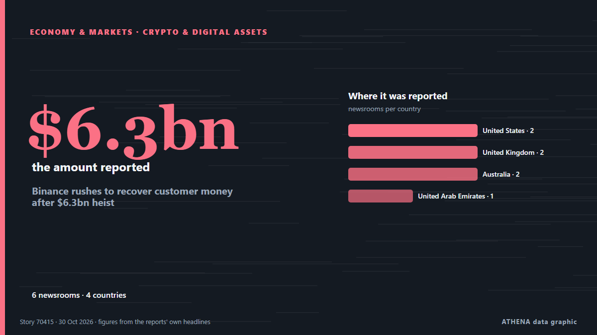

Экономика, финансы и рынки
Заголовки приводятся на английском языке, как они были опубликованы.
Монитор рынков - официальные данные
Куда движутся официальные рыночные показатели - рост, снижение или без изменений - с последним официальным значением и его датой, а также рыночные новости, проверенные ATHENA. Официальные данные, а не котировки в реальном времени.
Энергетика
| 1 день | 1 неделя | 1 месяц | Официальное значение | |
|---|---|---|---|---|
| Brent crude | ▼ | ▲ | ▲ | $123,10/bblОфициальные данные от 27 окт. 2026 |
| WTI crude | ▼ | ▼ | ▲ | $103,37/bblОфициальные данные от 27 окт. 2026 |
| US natural gas (Henry Hub) | ▲ | ▼ | ▼ | Необычное движение $2,76/MMBtuОфициальные данные от 27 окт. 2026 |
| European natural gas (1 месяц · 3 месяца · 12 месяцев)(1М · 3М · 12М) | ▲ | ▲ | ▲ | $25,49/MMBtuОфициальные данные от 1 сент. 2026 |
| Coal (Australia) (1 месяц · 3 месяца · 12 месяцев)(1М · 3М · 12М) | ▲ | ▲ | ▲ | $153,84/tОфициальные данные от 1 сент. 2026 |
Продовольствие
| 1 месяц | 3 месяца | 12 месяцев | Официальное значение | |
|---|---|---|---|---|
| Wheat | ▲ | ▲ | ▲ | $246,85/tОфициальные данные от 1 сент. 2026 |
Фондовые рынки США
| 1 день | 1 неделя | 1 месяц | Официальное значение | |
|---|---|---|---|---|
| S&P 500 | ▼ | ▲ | ▲ | Только направление (индекс © Cboe)Официальные данные от 29 окт. 2026 |
| Nasdaq Composite | ▼ | ▲ | ▼ | Только направление (индекс © Cboe)Официальные данные от 29 окт. 2026 |
Ставки, риск и доллар
| 1 день | 1 неделя | 1 месяц | Официальное значение | |
|---|---|---|---|---|
| US 10-year Treasury yield | ▼ | ▲ | ▼ | 4,98 %Официальные данные от 29 окт. 2026 |
| Market volatility (VIX) | ▲ | ▼ | ▲ | Только направление (индекс © Cboe)Официальные данные от 29 окт. 2026 |
| US dollar, broad index | ▬ | ▬ | ▲ | 121,32Официальные данные от 23 окт. 2026 |
Евро к другим валютам
| 1 день | 1 неделя | 1 месяц | Официальное значение | |
|---|---|---|---|---|
| EUR/USD | ▲ | ▼ | ▼ | 1,1172 USDОфициальные данные от 30 окт. 2026 |
| EUR/GBP | ▼ | ▼ | ▼ | 0,8338 GBPОфициальные данные от 30 окт. 2026 |
| EUR/CHF | ▼ | ▼ | ▼ | 0,9194 CHFОфициальные данные от 30 окт. 2026 |
| EUR/JPY | ▼ | ▲ | ▼ | 175,68 JPYОфициальные данные от 30 окт. 2026 |
| EUR/CNY | ▲ | ▼ | ▼ | 7,4326 CNYОфициальные данные от 30 окт. 2026 |
| EUR/TRY | ▲ | ▲ | ▲ | 55,801 TRYОфициальные данные от 30 окт. 2026 |
| EUR/NOK | ▼ | ▼ | ▼ | 10,3120 NOKОфициальные данные от 30 окт. 2026 |
Источники: Управление энергетической информации США (нефть, газ США), МВФ (европейский газ, уголь, пшеница), Минфин и ФРС США (доходность 10-летних облигаций, индекс доллара) и Cboe (VIX), S&P Dow Jones Indices (S&P 500), Nasdaq (Nasdaq Composite), через FRED (ФРБ Сент-Луиса); референсные курсы евро © Европейский центральный банк. Значения - последние официальные данные с датой, а не котировки в реальном времени. Направления рассчитывает ATHENA.
Криптовалюты, ETF и акции в новостях
- The sell-off for tech stocks worsens and overwhelms Wall Street Риск 5.9 31 окт.
- Bitcoin Slides Toward US$77,000 After Binance Hack Риск 3.0 31 окт.
- Colombia Stocks Fall 0.63% as Peso Slips | Colombia Market Report, Oct 29 Риск 0.0 30 окт.
- S&P Global revises Meta’s outlook to ‘negative’ on AI spending Риск 1.9 30 окт.
- Bitcoin slides below $77,000, BNB drops amid Binance hack Риск 1.3 30 окт.
- As it happened: Binance’s record $6.3B crypto hack Риск 3.8 30 окт.
- Intel’s stock crashes, knocking $12B from government’s stake Риск 0.0 30 окт.
- Anthropic expected to receive high ‘junk’ rating from credit agencies following IPO, report says Риск 2.0 30 окт.
- Evening News Brief October 30: Uttarakhand chopper crash, mega Binance crypto heist and more top stories Риск 3.9 30 окт.
- Reddit stock plunges 29% after weak outlook, wrapping its worst day ever Риск 5.3 30 окт.

Криптовалюты и цифровые активыBinance rushes to recover customer money after $6.3bn heist
World’s largest crypto exchange says an engineer’s laptop was compromised in major security breach. из Financial Times - Markets
| 18 окт. | 10 |
|---|---|
| 19 окт. | 39 |
| 20 окт. | 9 |
| 21 окт. | 34 |
| 22 окт. | 82 |
| 23 окт. | 59 |
| 24 окт. | 29 |
| 25 окт. | 32 |
| 26 окт. | 123 |
| 27 окт. | 132 |
| 28 окт. | 125 |
| 29 окт. | 88 |
| 30 окт. | 84 |
| 31 окт. | 0 |
Evening News Brief October 30: Uttarakhand chopper crash, mega Binance crypto heist and more top stories
High on the Qinghai-Xizang Plateau, the ground stays frozen, with only the top few meters melting each summer. из Phys.org
Fed holds main interest rate steady despite accelerating inflation
Two policymakers on the Federal Open Market Committee dissented in favor of raising the federal funds rate by 0.25 percentage point. из Supply Chain Dive
Dakar Rally 2027 will be held in Portugal and Morocco, say organisers
The Dakar Rally was moved from Saudi Arabia to Portugal and Morocco over security concerns stemming from Houthi attacks and the war in the Middle East. из Free Malaysia Today
Robert Abela Thanks Christine Lagarde For Her Leadership As ECB President
The deposit rate will be left at 2.5% on Thursday, analysts say. из Luxembourg Times
Unilever hiking prices as commodity costs soar amid Iran conflict
The consumer goods firm revealed underlying sales grew by 5.2% in the three months to September 30, of which 2.3% was due to higher prices. из Evening Standard (London)
Sri Lanka’s inflation climbs to 8.3%
Inflation in Sri Lanka increased to 8.3% in October, up from 8.0% recorded in September, according to the Colombo Consumer Price Index (CCPI), the Department of Census and Statistics said. из Daily Mirror
French Economy Shrinks 0.1% as Exports Fall
France's economy shrank 0.1% from July to September as exports fell 1.7%, Insee said, while dockworkers began a 24-hour national strike. из The Rio Times
PAG to buy 51% stake in Evergrande Property Services for $514 million
Asia-focused investment firm PAG will acquire a 51% stake in Evergrande Property Services Group , a unit of debt-laden developer China Evergrande Group, for HK$4.03 billion ($514 million), the two… из Business Recorder
Jio’s blockbuster debut puts valuation, earnings in focus
India’s second-most valuable listed company now needs to show investors the money. из The Business Times
Yen steady before BOJ, AI jitters drive Treasury rally, weigh on dollar
HONG KONG: The yen was steady on Friday ahead of the Bank of Japan’s policy decision, while the dollar tracked Treasury yields lower as a fresh wave of selling in AI shares triggered a flight to… из Business Recorder
Bitcoin price drops to $78,000
The High Court in Kuala Lumpur has ordered the Malaysian government to return about 176 bitcoin, now worth around US$14.3 million, to nine victims of a cryptocurrency investment scam. из VnExpress International
Shares in Google owner Alphabet plummet on profit miss, ad slowdown
WASHINGTON: Shares in Google parent Alphabet fell more than 10 per cent in after-hours trading on Wednesday as the company reported lower-than-expected profit and a slowdown in its advertising… из New Straits Times
Sonia Gandhi makes Instagram debut, shares first look of upcoming memoir ‘Belonging: A Journey Of Love’
In her first post, Sonia Gandhi described the memoir as a story of “love, duty, loss and finding a place to belong” из Hindustan Times
Seoul stocks open lower on Wall Street losses, AI concerns
South Korean stocks opened lower Friday, tracking overnight losses on Wall Street, as renewed concerns over the sustainability of the artificial intelligence (AI) boom weighed on investor sentiment. из Korea Herald
Pentagon’s US$1.5 Trillion Budget Explained
The Pentagon wants US$1.5 trillion for fiscal 2027, but US$350 billion hinges on a party-line vote. из The Rio Times
(2nd LD) Sept. industrial output growth hits 15-yr high on chips; retail sales, investment also up
SEOUL, Oct. 30 (Yonhap) -- South Korea's industrial output expanded in September... из Yonhap (English)
US economy posts strong growth, inflation stubbornly high in challenge to Trump
WASHINGTON, United States (AFP) — The United States posted strong economic growth in the third quarter, but the Fed's preferred inflation gauge also accelerated, the Commerce Department said on… из Jamaica Observer
US national debt hits record high of over $40.5 trillion
The debt has increased by $20 trillion in less than a decade. из TASS (English)
US senator calls for accountability over Israel’s killing of 9 Americans in occupied West Bank
‘Nine American citizens dead. No accountability,’ says Chris Van Hollen. из Anadolu Agency (English)
Asian shares fall after Alphabet earnings miss forecasts
MSCI's broadest index of Asia-Pacific shares outside Japan dropped 0.7%, while Japan's Nikkei trimmed gains to be up 0.3%. из Free Malaysia Today
Venezuelan leader demands Bank of England return gold
CARACAS, Venezuela (AFP) — Venezuelan interim president Delcy Rodriguez demanded Wednesday the return of her country's gold reserves held at the Bank of England, where they were frozen more than six… из Jamaica Observer
Revolut takes on high street banks with launch of personal loans in UK
The unsecured loans, ranging between £2,000 and £25,000, offer ‘near-instant’ funds after approval. из Evening Standard (London)
UN probe accuses Israel of 'extermination' in West Bank
GENEVA, Switzerland — Israel has committed the crime against humanity of "extermination" in the West Bank, while continuing to commit "genocide" against Palestinians in the Gaza Strip, United… из The Korea Times
Azerbaijani judoka wins gold at Abu Dhabi Grand Slam
Abu Dhabi's Sdeira Group unveils plans for a 27,000-resident workforce community at KEZAD Al Mamourah, with construction expected to begin in 2027. из Arabian Business
Dangote Refinery’s IPO closes with investors from 120 countries
"This is a historic achievement for Africa. из Vanguard
Election uncertainty rocks markets as Tel Aviv stocks tumble and shekel reverses gains
The TA-35 and TA-125 plunged as election uncertainty erased earlier optimism, while the shekel weakened and government bond yields climbed. из The Jerusalem Post
Bulgaria Joins International Initiative to Develop Air Defence Capabilities
Oct 26 - Britain will not join the Canada-led Defence, Security and Resilience Bank, in a setback to efforts to create the world's first global defence bank, according to a person familiar with the… из The Straits Times
US Fed holds interest rates steady despite 'too high' inflation
The US Federal Reserve is expected to keep interest rates unchanged in its upcoming meeting next week. из Times of India
Alphabet shares fall after revenue miss, cash burn worsens
Capital expenditures driven by AI will rise significantly in 2027, says its CFO. из The Business Times
Chrysochoidis: Tax fraud probes into Pizza Fan and Horiatiko have been under way for 18 months
Greece's public order minister says two separate investigations are being conducted under prosecutorial supervision and has not ruled out the involvement of state officials. из ProtoThema English
Ambani's Jio to make Mumbai trading debut after record $3.2 billion India IPO
Low-cost broadband provider Jio Platforms aims for £81bn valuation when it floats on the stock market on Wednesday India’s second-richest man, Mukesh Ambani, is launching what could be the country’s… из The Guardian
ILO Program Helps Improve Productivity, Working Conditions in Cashmere Industry The International Labour Organization (ILO) has focused on creating youth-friendly... 34 minutes
The Ministry of Manpower and the International Labour Organization (ILO) signed a Joint Declaration on Indonesia's ... из Antara (English)
World Bank sees commodity prices up 23% in 2026 due to Middle East war, other shocks
WASHINGTON: Global commodity prices are set to surge 23% in 2026, the World Bank said on Wednesday, citing rising energy prices and disruptions to cargo shipping during the Middle East war, grain… из Business Recorder
Israeli settlers savagely attack journalists in occupied West Bank
Deadly unexploded ordnance left by Israeli attacks threatens southern Lebanon's farmers, forcing many to risk their lives to harvest crops. из The New Arab